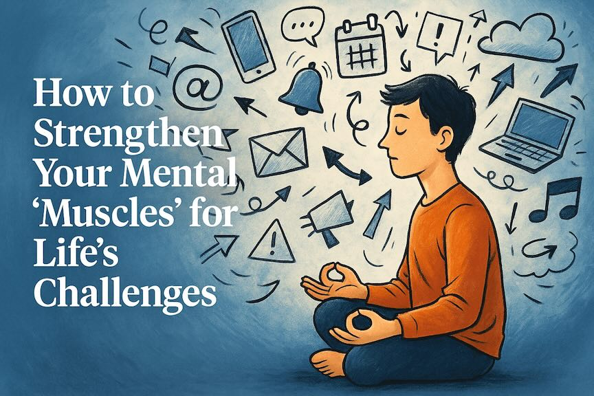

From Friction to Focus: Building Resilience in a Distracted World
By Ali Zafer · Published on August 09, 2025

We live in a world that’s designed to steal our attention. Notifications ping, emails pile up, and news headlines compete for our emotional energy. The result? Distractions create friction — slowing our progress toward the goals we care about most.
But here’s the truth: achieving anything meaningful requires a focus so intense it’s almost primal. The desire to reach your goal must be as vital as the air you breathe.
The Inner Fight We All Face
Years ago, when I was working toward a challenging career milestone, I woke up most mornings with a knot in my stomach. Fear of failure. Anxiety about whether I had what it took. Doubts whispering that maybe I wasn’t the right person for the task.
I learned something important: those feelings will come. They are part of the human experience. But instead of trying to push them away or bury them, I started observing them — patiently. Almost like I was watching a passing storm from inside my home.
I made a rule for myself:
- Let the fear linger — but don’t let it drive the car.
- Use my logical brain to watch what my emotional brain was doing.
- Remind myself: This too will pass.
And it always did. Each time I resisted the urge to react impulsively, I built a stronger “muscle memory” to face those emotions next time.
A Lesson From the Pool
I once worked with a teenage swimmer — talented but easily rattled before competitions. Her coach told her something brilliant: “You don’t have to like the nerves, but you do have to swim with them.”
That advice changed her approach. Instead of trying to eliminate pre-race anxiety, she started treating it like part of the warm-up. She swam through it. Over time, she not only became faster in the pool — she became more resilient outside of it.
This is How We Make Kids Strong
At Samawaat , our youth leadership program, we teach middle and high school students to practice this exact mindset:
- Recognize fear, anxiety, and frustration for what they are — temporary states.
- Avoid impulsive, emotional decisions in the moment.
- Strengthen the mental “muscles” that help them bounce back stronger.
In a world of constant distraction, this skill is priceless. We can’t remove every challenge from our children’s path — nor should we. The goal is to give them the tools to navigate life’s turbulence with patience, focus, and grit. Because resilience isn’t built when the waters are calm. It’s built when we choose to swim through the storm — again and again — until it becomes second nature.
That’s the heart of what we do at Samawaat. We give middle and high school students the tools to handle setbacks, focus in a noisy world, and lead with both heart and mind.
If you’re curious about how we do this, please RSVP for an information session.